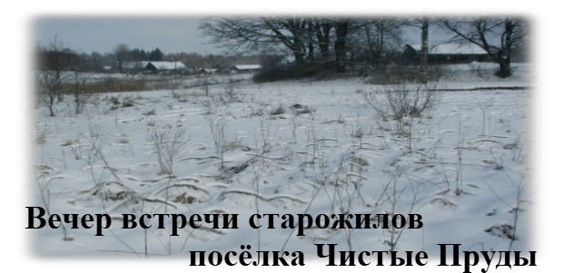
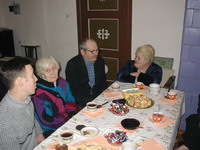
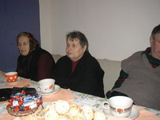
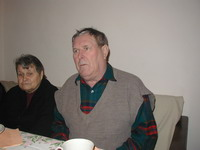

Старожилы и ветераны труда
Уважаемые старожилы и ветераны труда посёлка Чистые Пруды! Общественное учреждение «Виштынецкий эколого-исторический музей» приглашало вас на вечер встречи, который должен был состояться 22 февраля 2004 года в здании пасторского домика музея Кристионаса Донелайтиса.
Воспоминания о прошлом, о судьбах людей, некогда пришедших на израненную землю, об их труде, радостях и невзгодах нещадно стирает время. Забываются и кажутся неважными многие страницы жизни.
Мы знаем и уверены, что без прошлого нет будущего. Каждое воспоминание о былом, каждый предмет, хранящий память прошлого, — сокровище, необходимое нам в будущем. Оно становится живым напоминанием о нашей истории, наших победах, ошибках и удачах, остаётся нашим детям и напоминает им о труде и радости их отцов и матерей.
Когда мы приходим на землю, мы становимся частью её общей истории — истории, уходящей в глубины веков. Заглянуть за пелену времени в наших с вами общих силах.
Сотрудники Виштынецкого эколого-исторического музея были бы сердечно благодарны всем, кто согласился бы прожить тот февральский вечер вместе и поделиться воспоминаниями.
Архивное объявление о встрече 22 февраля 2004 года. Дата и приглашение относятся к прошлому и не являются актуальным мероприятием.



